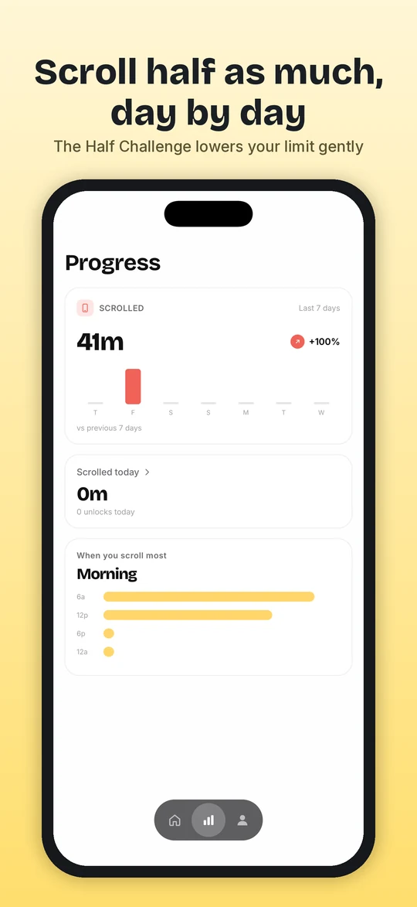

How to cut your screen time in half
Halving your screen time sounds drastic, but you don’t have to do it overnight. Cutting a few minutes a day is small enough that you barely notice, and after a few weeks the savings add up to hours.
A gradual plan
- Check your daily average in Settings → Screen Time. That is your real starting point.
- Set your goal at half of that number, not zero.
- Lower your limit by 5 to 15 minutes a day instead of all at once.
- Keep what you enjoy and cut the mindless sessions first.
- Judge your weekly trend, not a single bad day.
The Half Challenge in ScrollVolt
ScrollVolt does the math for you. You choose the pace, 5, 10 or 15 minutes a day, and the app lowers your daily limit by that amount until you scroll half as much as you do today. Meanwhile your chosen apps share one scroll battery that recharges over the day, and you unlock exactly the minutes you want by dragging it. Focus sessions charge it twice as fast. The progress screen shows today’s battery chart, your weekly scroll trend and a log of every scroll and focus session, so you can see the change instead of guessing.


Frequently asked questions
Why half and not zero?
Zero is hard to keep for most people. Half gives you back a lot of time while you keep the parts of your phone you actually enjoy.
How long does it take to cut screen time in half?
It depends on where you start and the pace you pick. Going from two hours a day to one takes about 12 days at 5 minutes a day, or about 4 days at 15.
Do I have to delete social media apps?
No. ScrollVolt limits the apps you pick without deleting them.
Try ScrollVolt on your iPhone
ScrollVolt Premium is a yearly subscription that starts with a 3-day free trial, and you can cancel any time in your Apple Account settings. Prefer to pay once? There is also a one-time Lifetime unlock.
Download on theApp Store